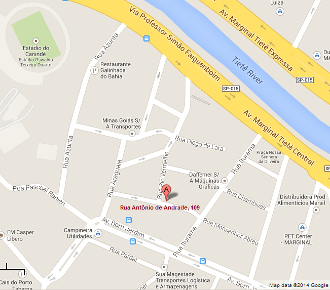

Direções
Localização perto do Estádio do Canindé da Portuguesa
Vindo da Marginal Tietê sentido Ayrton Senna:
Siga a Marginal até chegar ao Estádio do Canindé
Passando o estádio, vire à direita na quarta rua
(Iturama)
Vire à esquerda na segunda rua
(Antônio de Andrade)
Vindo da Marginal Tietê sentido Castelo Branco:
Entre na Ponte Vila Guilherme para atravessar a Marginal
Vire à direita na
Av. Bom Jardim
Passando a lombada eletrônica, vire à direita na segunda rua
(Iturama)
Vire à esquerda na primeira rua
(Antônio de Andrade)
